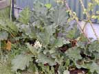
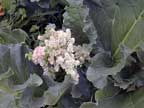
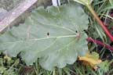
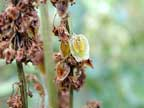
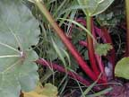

Rhubarb
Rheum rhaponticum
Other names
Description
Rhubarb is a perennial garden plant. Leaf blades are triangular with undulating edges, 30 60cm across. When young, leaves are bright green, shiny and crinkled. Long pinkish red erect jointed stalks. Small creamy red flowers may develop in amongst branching stalks.
Similar plants
Gunnera species are sometimes grown as ornamental pond plants. They have green thorny stalks and sometimes grow very large (up to 5m).
Distribution
Garden plant grown for its edible stalks. The plant thrives in rich, deep well drained soil in open sunny positions.
Toxin
The leaves contain anthroquinone glycosides and large quantities of soluble oxalates. A substantial absorption of oxalates causes damage to ruminal mucosa and calcium oxalate may precipitate in submucosal arteries. Free circulating oxalate may directly damage lung capillaries and cause pulmonary oedema. Soluble oxalates produce mainly bicarbonate or carbonate, which, if present in large quantities can cause a severe alkalosis. Precipitation of blood calcium may prolong clotting times. Calcium oxalate crystals may precipitate in tubular lumens causing bladder inflammation and blockage of the urethra especially in bulls, bullocks, rams and wethers. Plasma concentrations of calcium decrease due to high plasma oxalate concentrations and so clinical signs of hypocalcaemia may develop.
Species affected
Ruminants and horses. Humans have been poisoned, usually after eating the leaves.
Clinical signs acute
Abdominal pain due to inflammation of the urinary tract. Hypocalcaemia which causes muscle tremors which becomes muscular incoordination, followed by coma, and finally death. Lesions mainly confined to the urinary tract.
Clinical signs chronic
Post mortem signs
Severe pulmonary congestion. Copious amounts of froth in the trachea and bronchi. Marked hyperaemia of the mucosa of the forestomachs and intestines. Kidneys usually swollen with a pale cortex.
Diagnosis
Clinical signs and post mortem findings. Calcium oxalate crystals especially found at the sigmoid flexure in the urethra of bulls and in the twisted urethral process in rams.
Differential diagnosis
Other plant poisonings, especially those containing oxalates such as docks, taro, elephants ear, oak and arum lily.
Treatment
As for other plants containing oxalates. Detoxify with activated charcoal and laxatives when appropriate. Supportive treatment for hypocalcaemia and renal injury when present. Chalk or other calcium source (limewater) to convert soluble oxalates to harmless precipitates.
Prognosis
Usually good.
Prevention
References
Conner H.E. The Poisonous Plants In New Zealand. 1992. GP Publications Ltd, Wellington
Cooper M R, Johnson A W. Poisonous Plants and Fungi in Britan: Animals and Human Poisoning. Her Majesty’s Stationary Office. London. 1998
Parton K, Bruere A.N. and Chambers J.P. Veterinary Clinical Toxicology, 2nd ed. 2001. Veterinary Continuing Education Publication No. 208
|  plant |
 |
|
|
 |
|
|
|
 |
 edible stems |
|
|
|
|
|